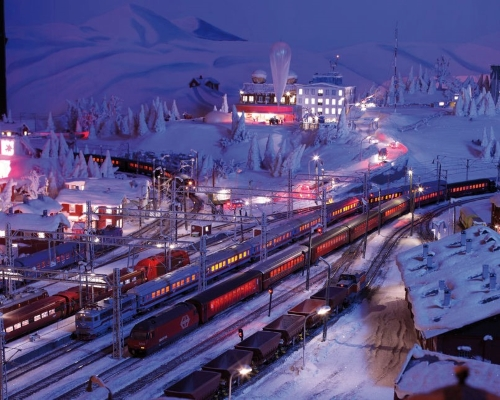
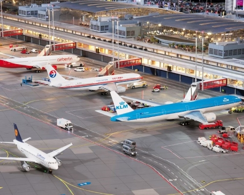
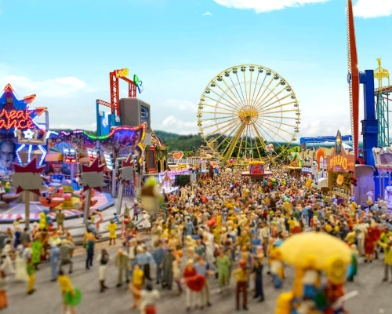

미니어처 분더란트
Miniatur Wunderland
- 
- 
- 
주소
정보
꿀팁
교통
운영 시간
입장료
Kehrwieder 2-4 Block D, 20457 Hamburg Germany, 독일
수백 종의 축소된 열차 모형이 실제 움직이는 유럽 내에서
도 유명한 미니어처 전문 전시관이다.
독일의 여러 도시들과 더불어 스위스 등 다른 유럽 국가들
의 건물과 자연환경을 그대로 축소해 놓은 여러 카테고리
의 관이 있다.
일정 시간이 되면 비행기 모형이 공항에 착륙하거나 이륙
하는 모습을 두 눈으로 볼 수 있다. 장난감 모형이지만
비행기의 경우 실제로 이착륙하는 모습도 실제로 묘사하고
있다.
연간 방문객들이 굉장히 많은 곳으로 인파가 몰리는 시간
대나 요일은 주의하자.
미니어처 분더란트는 항구 바깥 쪽에 위치해 있어
교통수단으로 찾아가기는 어렵다.
가까운 U반 역은 없어 도보 이동 혹은 버스를 추천한다.
버스는 6번과 602번을 타고 Auf dem Sande 역에서 하차
하면 바로 앞이다.
도보 이동, 버스
현재는 운영 x
매일 달라짐. 홈페이지 참고
2021년 5월 27일 재오픈 예정
성인 : 15€, 학생 : 7.5€